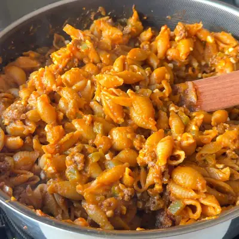

Cottage Cheese Pasta with Pumpkin

Ingredients
- 1 teaspoon olive oil
- 1 pound ground beef
- 1 small yellow onion (finely chopped)
- 1 green bell pepper (finely chopped)
- 1 tablespoon minced garlic (can add less)
- 3 tablespoons tomato paste
- 1 teaspoon smoked paprika
- 1/2 teaspoon cumin
- 4 cups low sodium beef broth
- 1 (15 ounce) can tomato sauce
- 16 ounce medium shell pasta or macaroni
- 1 (15 ounce) can pumpkin puree
- 1 cup cottage cheese (can add more)
Steps
- Cook the beef - Heat oil in a large, deep skillet or Dutch oven over medium heat. Add the ground beef and cook, breaking it apart with a spoon, until browned. Drain any excess fat.
- Add the vegetables and seasonings - Stir in the chopped onion, bell peppers, and minced garlic. Cook for 3–4 minutes, until softened and fragrant. Add the tomato paste, smoked paprika, and cumin, stirring well to coat the beef and veggies.
- Add liquids and pasta - Pour in the beef broth and tomato sauce, stirring to combine. Bring the mixture to a boil, then add the uncooked pasta. Reduce the heat to medium-low, cover, and simmer for 10–12 minutes, stirring occasionally, until the pasta is cooked and most of the liquid is absorbed.
- Finish with pumpkin and cottage cheese - Stir in the pumpkin puree and cottage cheese until well combined and creamy. Let it cook for another 1–2 minutes to heat through.
- Serve and enjoy - Taste and adjust seasoning as needed. Serve warm, topped with freshly cracked black pepper or a sprinkle of parmesan if desired.
Recipe by Min Kwon · Kidfriendly Meals, from MJ and Hungryman. Saved here for personal use; the original has the full notes, tips and photos. Open original